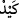

edenler ise tâğut yolunda” yâni kendilerini şeytana ulaştıran yolda “savaşırlar.”
Dolayısıyla onların şeytandan başka dostları yoktur. “O halde” ey Allah’ın dostları
“şeytanın dostlarıyla savaşın, şüphe yok ki şeytanın hîlesi zayıftır.” Hile (
), oyuna
getirerek birinin durumunun bozulması için çalışmak demektir. Yâni, Allah’ın kâfirler
için kurduğu tuzağa göre şeytanın mü’minler için kurduğu tuzak, üzerinde durmaya
değmeyecek kadar zayıftır. Öyleyse onun dostlarından korkmayın. Çünkü onlar son
derece zayıf ve basit bir şeye güveniyorlar. Bu durum aynen şu söze benziyor: “Hakkın
devleti, bâtılın ise cevleti (gürültüsü) vardır.”
Müfessirler bu gibi yerlerde “
”nin kullanılmasının, o şeyin var olduğundan beri
öyle olduğunu kuvvetlice beyan etmek maksadına ma’tuf olduğunu söylemişlerdir.
Dolayısıyla şeytanın hîlesi var olduğundan beri hep zayıftır.
İmam Fahreddin Râzî tefsirinde şöyle diyor: “‘Şüphesiz ki şeytanın hîlesi zayıftır.’
Çünkü Allah kendi dostlarına yardım eder, şeytan da kendi dostlarına yardım eder. Hiç
şüphe yok ki şeytanın kendi dostlarına yardımı, Allah’ın kendi dostlarına yardımından
daha zayıftır. Görmez misin ki, hayırlı ve dindar kimseler, hayattayken son derece fakir
ve zelil olsalar bile asırlarca hayırla yâdedilirler. Buna karşılık zâlim hükümdar ve
zorbalar, öldükleri zaman kaybolup giderler. Dünyâda adları, sanları ve eserleri
kalmaz.
“Cehennem şehevî arzularla çevrelenmiştir.”[80] “Her insanın kendisine vesvese
veren bir şeytanı ile kendisine iyi şeyler ilham eden bir meleği vardır. Şeytan durmadan
bir takım şeyleri güzel gösterip aldatmaya çalışır. Melek de kişiyi bu şeylerden
alıkoymaya ve ona hayırlı şeyleri ilham etmeye çalışır.[81] İnsan hangisiyle birlikte
hareket ederse, o galip gelir.
Denilir ki: Şeytan ve nefsin hîlesi, bir köpeğe benzer. Eğer ona karşı koyarsan derini
parçalar ve elbiseni koparır. Sâhibine başvurursan onu yumuşaklıkla senden
uzaklaştırır. İşte Allah Teâlâ da şeytanı kullarına düşman etmiştir ki ondan uzaklaşıp
kendisine dönsünler. Nefsi üzerlerine salmıştır ki kendisine yönelsinler. Şeytan ve nefs
ne zaman kullara saldırıp musallat olsa, onlar ihtiyaç içinde O’na yönelerek, sığınarak
ve darda kalmış bir vaziyette huzurunda dururlar.”
Ahmed b. Sehl der ki: “Senin dört tane düşmanın vardır:
Birincisi, dünyâdır. Onun silâhı, insanlara karışmak, hapishanesi ise uzlet (halka
karışmayıp inzivâya çekilmek)tir.
İkincisi, şeytandır. Onun silâhı tokluk, hapishânesi ise açlıktır.
Üçüncüsü, nefsdir. Onun silâhı uyku, hapishânesi ise uyanıklıktır.
Dördüncüsü, hevâdır. Onun silâhı konuşmak, hapishânesi ise susmaktır.
Bil ki, şeytanın hîlesi, hakîkaten zayıftır. Çünkü Allah, her zaman dostlarına yardım
eder. Bu yardım ise nefislerini tezkiye etmeleri (arıtıp yüceltmeleri), kalplerini dünyevî
meşgalelerden arındırmaları ve sırlarını tevhid nuruyla doldurmaları sâyesinde ortaya